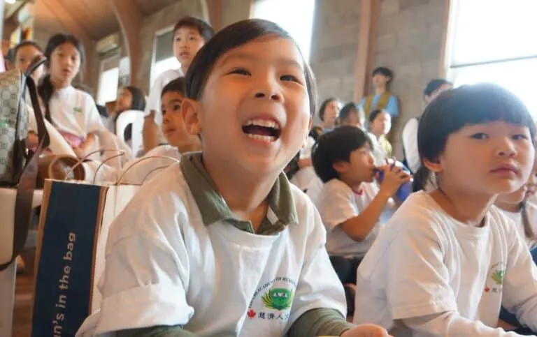
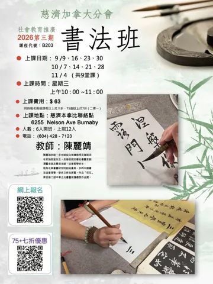
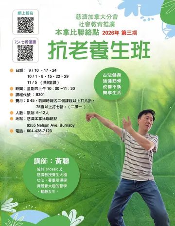
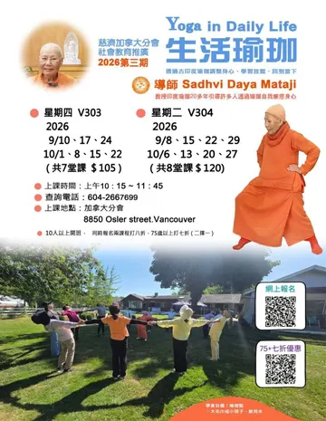
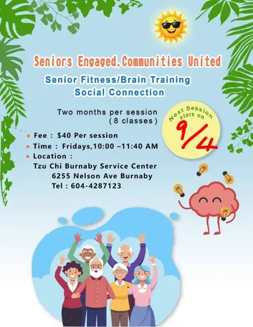

Charity
Disaster relief around the world, and care close to home through the Blue Sky Project and humanitarian care for refugees.
For 60 years Tzu Chi has relieved the suffering of people in poverty and disaster on five continents. In Canada, volunteers have served their neighbours for 34 years, in 13 cities.
Tzu Chi's four missions, carried out by volunteers in every community we serve.
Disaster relief around the world, and care close to home through the Blue Sky Project and humanitarian care for refugees.
A free Traditional Chinese Medicine clinic, the Tzu Chi Wellness Group and TIMA, our medical association.

Tzu Chi Academy, Great Love Daycare, the Taiwan Center for Mandarin Learning, and youth and teachers' associations.
Writing, photography, video and translation that share stories of goodness, alongside community cleanups and vegetarian living.
Kindness turned into lasting relief, by volunteers around the world.
Source: Buddhist Tzu Chi Charity Foundation 2025 Annual Report. Housing figures updated through February 2026.
Continuing education for every age, taught by volunteers and guest instructors. Seniors 75 and over save 30%.

Explore the brushwork and calm of Chinese calligraphy with instructor Li-Jing Chen. Beginners welcome.

Strengthen muscles and bones and improve balance with Mr. Huang Cong, where movement and stillness meet.

Relax body and mind and return to the present with Sadhvi Daya Mataji, who has taught for over 20 years.
Make greeting cards, LINE stickers and artwork on your phone, step by step, from your very first tap.

Movement, memory games and good company, so every Friday brings more energy and connection.
Each morning, before going to market, they dropped 50 cents into a bamboo tube to help a neighbour in need. What seemed a drop in the bucket became an ocean of relief for families and communities around the world.
As floods, droughts and storms grow, the need is greater than ever. No gift is too small, and none too large, to make a difference.
Buddhist Compassion Relief Tzu Chi Foundation of Canada is a registered charity, number 137023685 RR0001.
Blessed are those who have the ability to love and be loved by others.
Dharma Master Cheng Yen, who founded Tzu Chi in Hualien, Taiwan, in 1966
From volunteers across Canada.
Five provinces, two regional chapters and 13 cities. Visit, take a class, or meet the volunteers.
Find a locationWestern Headquarters
8850 Osler Street, Vancouver, BC V6P 4G2
604-266-7699
Tzu Chi Burnaby
6255 Nelson Avenue, Burnaby, BC
604-428-7123
Chapters in Toronto, North Toronto, West Toronto and Montreal.
Pack relief supplies, cook for an event, clean up a park or help in a class. Tell us what you enjoy and we will find a place for you.